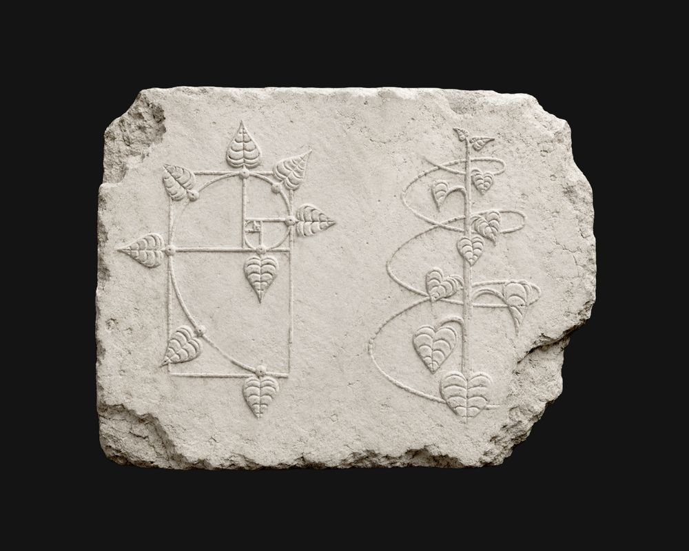
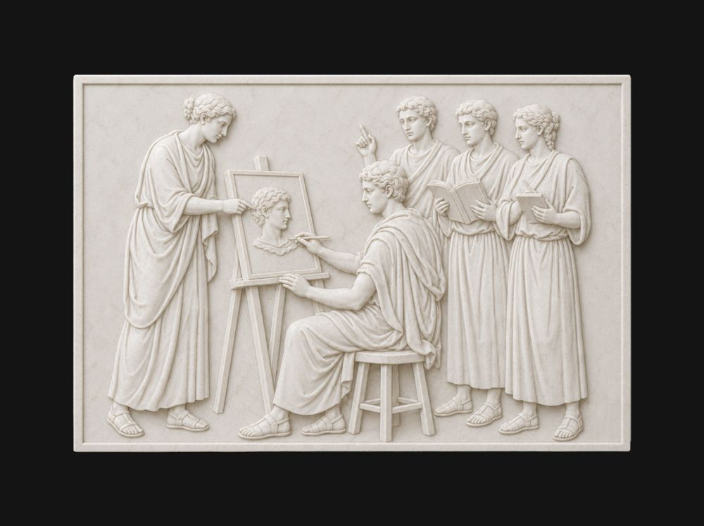
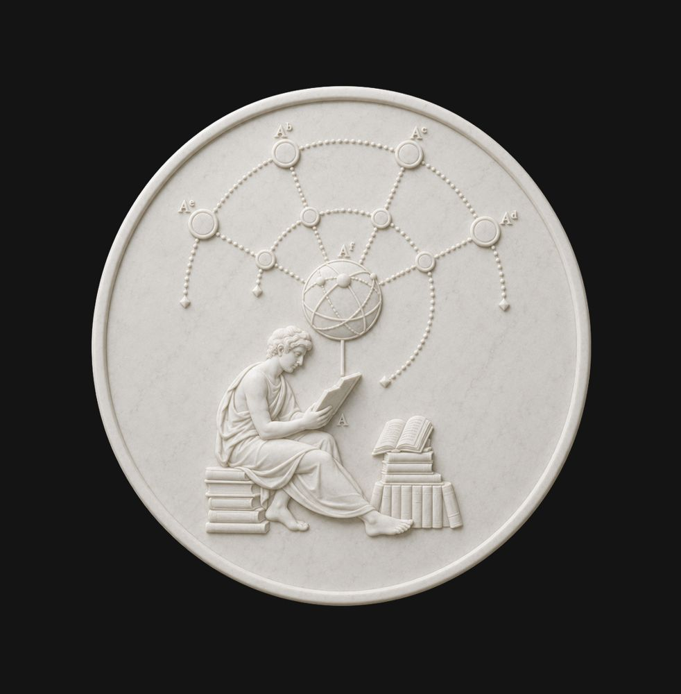
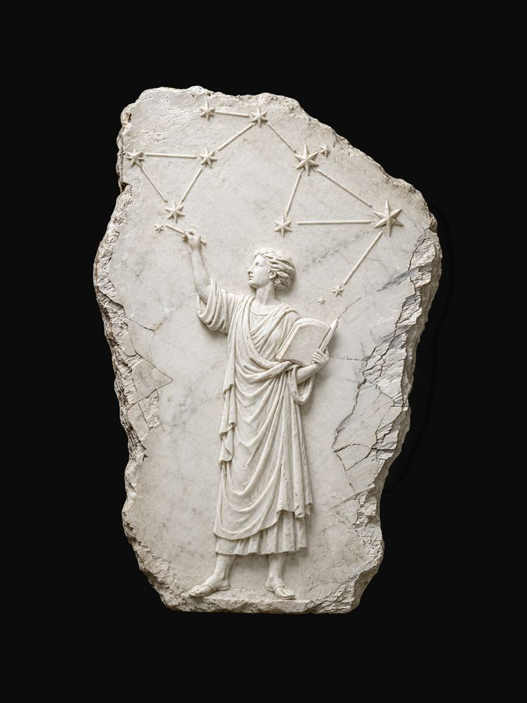
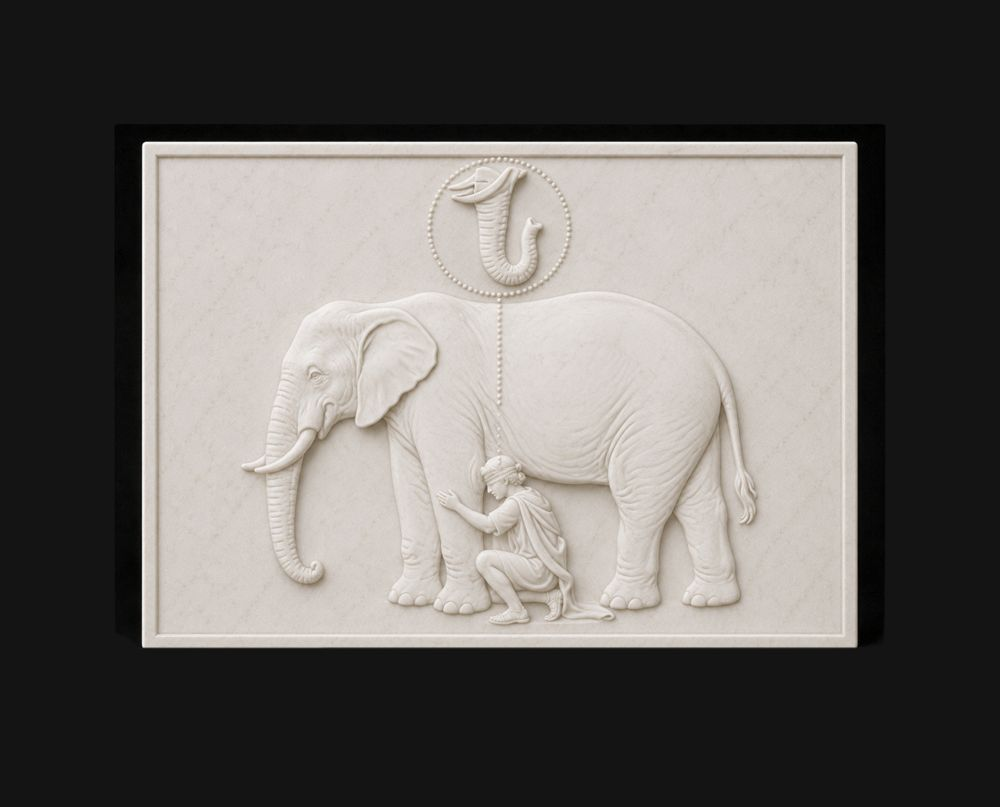
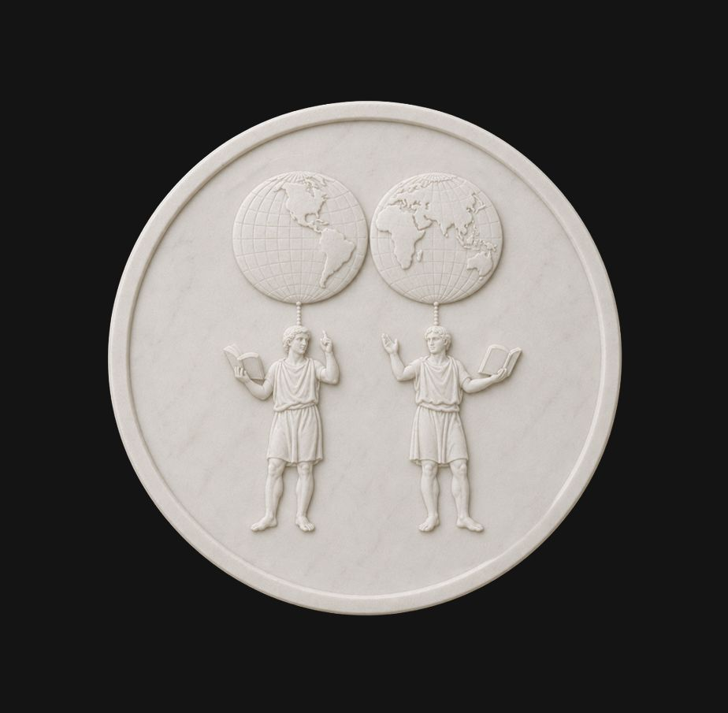

Programs
Phi의 1년제 프로그램을 소개합니다.
도구는 빠르게 바뀝니다. Phi는 도구보다 사고방식에 집중합니다. 탁월한 인재는 어떤 조건에도 적용할 수 있는 자신만의 성공 방정식을 갖고 있고, 이 인재를 벡터형 인재라 부릅니다. 1년제 프로그램은 벡터형 인재가 가진 역량과 태도를 학습하고, 나아가 주체적으로 자신만의 역량과 태도를 만들어갑니다.
이 과정은 연령, 직군, 경력을 제한하지 않습니다. 디자인을 더 깊이 이해하고 싶은 사람, 방향을 다시 잡고 싶은 사람, 스스로 만들고 출시할 수 있는 기반을 갖추고 싶은 사람. 어느 지점에서 출발하든, 디자인에 진지한 태도를 가진 분이라면 지원할 수 있습니다.

- 과정 기간
- 1년 (2학기)
- 총 시수
- 약 1,000시간+
- 수업 방식
- 월-금, 전일제 오프라인
- 학습자 규모
- 60명 (30명씩, 2개 클래스로 운영)
- 개강
- 2027년 2월 15일
역량 Competency
어떤 환경에서도 스스로 답을 찾을 수 있는 사고방식을 만들기 위해, Phi는 아래 역량과 태도를 중요시합니다.
-

심미안
Aesthetic Sense
디자이너에게 가장 중요한 역량을 고르라면 아름다움을 인식하는 능력 아닐까? 대상을 보았을 때 구체적으로 부분을 인식하고, 미추를 판단하며, 그 미추의 정도를 가늠할 수 있는 예리한 감각을 훈련한다.
-

언어화
Articulation
언어는 곧 사고의 천장이다. 내가 다룰 수 있는 어휘의 질과 양이 나의 사고방식의 높이를 결정한다. 타인에게 내 생각을 전달하는 것은 물론, 스스로를 설득할 수 있는 언어 체계를 갖춘다.
-

구조화
Structural Thinking
나무를 보는 것만큼 숲을 보는 일도 중요하다. 구체와 추상을 오가며 현재 다루고 있는 문제가 전체 그림에서 어느 위치성을 지니는지 이해하고, 파편화된 분야들을 하나로 엮어내는 구조적 사고를 훈련한다.
-

문제 정의
Problem Definition
많은 디자인이 실패하는 이유는 틀린 문제를 풀었기 때문이다. 증상을 문제로 오독하지 않고, 본질이 무엇인지 파악함으로써 정확한 문제 정의를 추구한다.
-

관점 전환
Reframing
혁신적인 해결책은 같은 문제를 다른 관점으로 바라보았을 때 나온다. 특정 문제를 그 분야의 문법으로만 정의하는 것이 아니라, 다른 분야의 레퍼런스도 내 문제에 적용할 수 있는 관점을 지니기 위해 유연한 관점 전환을 훈련한다.
주요 수업들
상기된 역량과 태도를 중심으로 수업들이 설계되었습니다. 이를 토대로 디지털 프로덕트 디자인과 브랜딩 분야에서 자신의 가능성을 펼칠 수 있도록 합니다.
본 주요 수업들은 1학기에 진행되는 수업들이며, 2학기는 1학기의 성취에 따라 학습 효과를 보완, 증폭할 수 있는 방향으로 준비됩니다.
태도 Phi OS
-
능동적으로 학습하기
Active Learning
Phi의 전체 교육 과정은 학습자의 능동성을 중요시한다. 교사는 가르치고, 학생은 배우는 구조가 아닌 학습자 스스로 동기를 부여하고 배움을 설계하는 방식을 전제로 한다.
-
무지를 발굴하기
Discovering Unknowns
Phi에서는 질문하는 것, 못하는 상태에서 내 결과물을 내놓는 것을 권장한다. 자신의 현재 상태를 꺼내놓음으로써 자신이 정확하게 무엇을 모르는지 발견할 수 있는 기회가 되기 때문이다.
-
압축된 사고 분석하기
Unpacking the Compression
사고 과정을 관찰하는 훈련이 되어있다면, 교실은 물론 교실 밖 일상에서도 전문성을 추출해낼 수 있다. Phi에서는 지식을 전달 받기를 기다리지 않고, 먼저 추출하는 태도와 기술을 연습한다.
-
불만족에 민감해지기
Dissatisfaction Sensor
문제 정의의 출발은 문제 감지에서 시작된다. 완성도를 타협하지 않는 이들은 쉽게 만족하지 않고 불만족을 민감하게 알아차린다. 좋은 것을 만들기 위해서는 좋지 않음을 느낄 수 있어야 한다.
-
공유하며 배우기
Learning by Sharing
가장 잘 배우는 방법은 남에게 가르쳐 보는 것이다. 이미 충분히 이해했다고 생각하는 것도 타인에게 설명해보고, 설득해보면 공백이 있다는 것을 깨닫게 된다. 이 메커니즘을 이해하고, 자신의 지식을 적극적으로 공유할 수 있어야 한다.
수업을 관통하는 접근
핵심 수업 장치
Phi의 교육은 인지적 도제(Cognitive Apprenticeship)를 토대로 설계되었습니다. 전문가의 사고 과정을 학습자가 능동적으로 관찰할 수 있도록 다양한 장치가 준비되어있습니다.
프로그램 구조
1년제 프로그램은 아래 요소들로 구성되어있습니다.
1년의 흐름 연간 구조
주간 시간표
매주 월-금 수업이 진행됩니다. 화, 수, 목은 오전-오후 풀타임으로 진행되며 월, 금은 학기 수업 스케줄에 따라 유동적으로 진행됩니다.
채용 연계
Phi의 1년제 프로그램 졸업자들은 토스의 별도 채용 전형에 지원할 수 있습니다.
토스 별도 채용 전형
2028년 2월, Phi 1년제 프로그램 졸업자를 위한 토스의 별도 채용 전형이 마련됩니다.
우수 졸업자 입사 특전*
우수 졸업자에게는 채용 전형에 더해 별도의 입사 특전*이 제공됩니다.
검토 중*채용 특전의 세부 내용은 현재 검토 중입니다.